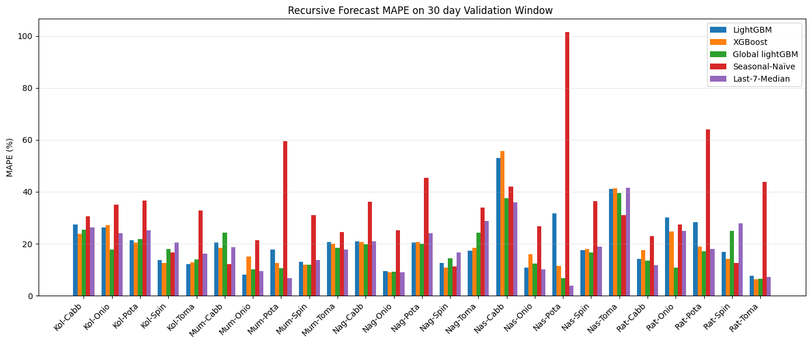
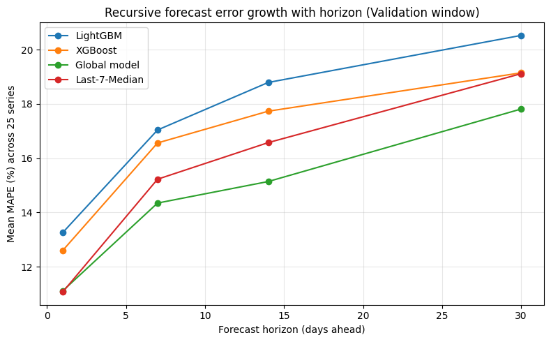
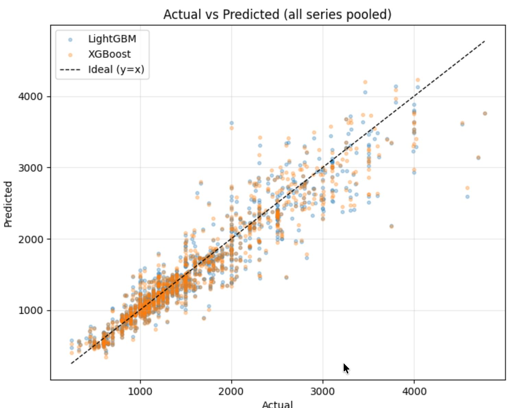

Models forecast prices step by step into the future and are scored on real prices they never saw during training: a 30-day validation window (used to pick the best model) and a separate 60-day test window (used once, for the final check). Error is MAPE — the average % difference from the real price; lower is better.
| Model | Validation error (MAPE %) |
|---|---|
| Per-Series LightGBM | 20.53 |
| Per-Series XGBoost | 19.15 |
| Seasonal-Naive (baseline) | 34.42 |
| Last-7-Day Median (baseline) | 19.12 |
| Global Cross-Series LightGBM | 17.81 |
| Crop | Avg. error | Baseline error | Beat baseline |
|---|---|---|---|
| Potato | 10.6% | 8.9% | 1 / 5 |
| Onion | 16.9% | 20.4% | 3 / 5 |
| Spinach | 22.3% | 28.4% | 5 / 5 |
| Cabbage | 30.3% | 44.0% | 5 / 5 |
| Tomato | 31.8% | 33.1% | 3 / 5 |



On the test window, the lowest error is Kolhapur Onion (5.7%) and the highest is Nagpur Spinach (40.0%); the middle series sits near 22.6%. Accuracy varies a lot by series.
Potato is the most predictable (10.6% average test error); Tomato (31.8%) and Cabbage (30.3%) are the hardest.
Highest test error: Nagpur Spinach (40.0%), Nagpur Tomato (37.9%), Kolhapur Tomato (37.3%). Treat these forecasts as wide ranges. Nagpur is the hardest city on average (27.7%).
Potato prices move so steadily that the last-7-day median already scores 8.9%, so the models beat it in only 1 of 5 cities. The models gain most on Cabbage (30.3% vs 44.0%).
The Global model, trained on all 25 series together, has the lowest validation error (17.81%) and was chosen for 13 series. It is the only model to beat the last-7-day median on average (19.12%).
For the Global model, validation error rises from 11.1% on day 1 to 17.8% on day 30. That is why the Predict page shows a range, not a single number.
The best model was picked for each series on the 30-day validation window, then checked on the 60-day test window. Errors are MAPE %.
| City | Crop | Selected model | Validation error | Test error | Baseline (test) | Beat baseline |
|---|---|---|---|---|---|---|
| Kolhapur | Cabbage | Per-Series XGBoost | 23.77 | 27.97 | 30.67 | ✅ |
| Kolhapur | Onion | Global Cross-Series LightGBM | 17.69 | 5.70 | 12.84 | ✅ |
| Kolhapur | Potato | Per-Series XGBoost (synthetic history) | 20.51 | 8.88 | 6.83 | — |
| Kolhapur | Spinach | Per-Series XGBoost (synthetic history) | 12.71 | 20.54 | 22.72 | ✅ |
| Kolhapur | Tomato | Per-Series LightGBM | 12.25 | 37.27 | 34.13 | — |
| Mumbai | Cabbage | Per-Series XGBoost | 18.36 | 25.16 | 46.46 | ✅ |
| Mumbai | Onion | Per-Series LightGBM | 8.04 | 17.48 | 24.95 | ✅ |
| Mumbai | Potato | Global Cross-Series LightGBM | 10.53 | 8.50 | 5.47 | — |
| Mumbai | Spinach | Global Cross-Series LightGBM | 11.85 | 27.96 | 34.55 | ✅ |
| Mumbai | Tomato | Global Cross-Series LightGBM | 18.35 | 22.59 | 29.79 | ✅ |
| Nagpur | Cabbage | Global Cross-Series LightGBM | 19.82 | 26.26 | 38.41 | ✅ |
| Nagpur | Onion | Per-Series XGBoost | 9.06 | 20.63 | 18.34 | — |
| Nagpur | Potato | Global Cross-Series LightGBM | 20.05 | 13.50 | 11.46 | — |
| Nagpur | Spinach | Per-Series XGBoost | 10.71 | 40.01 | 50.36 | ✅ |
| Nagpur | Tomato | Per-Series LightGBM | 17.23 | 37.91 | 38.52 | ✅ |
| Nashik | Cabbage | Global Cross-Series LightGBM | 37.54 | 36.36 | 58.40 | ✅ |
| Nashik | Onion | Per-Series LightGBM | 10.88 | 27.33 | 22.79 | — |
| Nashik | Potato | Global Cross-Series LightGBM | 6.69 | 8.47 | 13.23 | ✅ |
| Nashik | Spinach | Global Cross-Series LightGBM | 16.54 | 14.01 | 24.74 | ✅ |
| Nashik | Tomato | Global Cross-Series LightGBM | 39.63 | 25.02 | 27.35 | ✅ |
| Ratnagiri | Cabbage | Global Cross-Series LightGBM (synthetic history) | 13.46 | 35.90 | 46.13 | ✅ |
| Ratnagiri | Onion | Global Cross-Series LightGBM (synthetic history) | 10.72 | 13.24 | 23.19 | ✅ |
| Ratnagiri | Potato | Global Cross-Series LightGBM (synthetic history) | 17.18 | 13.55 | 7.58 | — |
| Ratnagiri | Spinach | Per-Series XGBoost (synthetic history) | 14.12 | 8.93 | 9.53 | ✅ |
| Ratnagiri | Tomato | Per-Series XGBoost | 6.41 | 36.34 | 35.80 | — |
Errors range from 5.7% to 40.0% on the test window, and the selected model beat the baseline on 17 of 25 series, not all. The average hides this spread.
Weather, rainfall, market arrivals, transport and policy are not included, so sudden shocks cannot be predicted.
6 of 25 series (Ratnagiri ×4, Kolhapur Potato and Spinach) use synthetic history and are marked wherever shown.
Weather and arrivals data, real-time price feeds, more crops and regions, and deeper models.